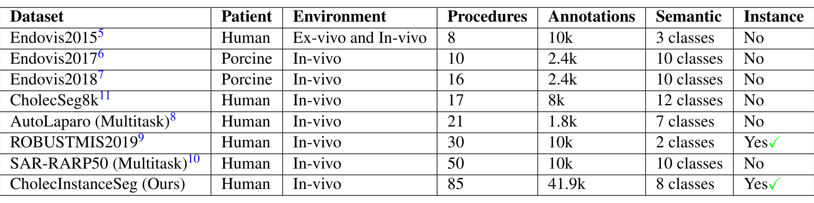
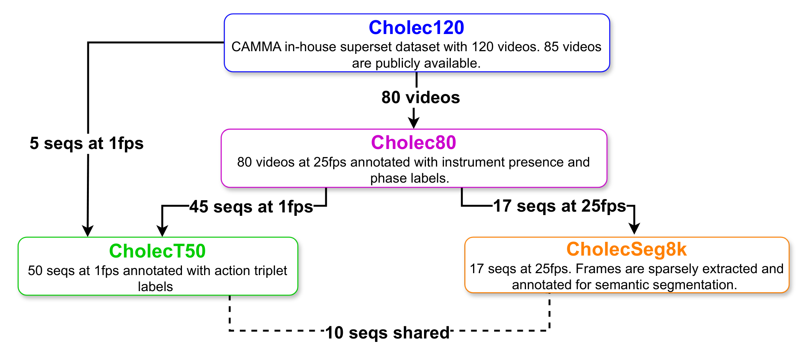
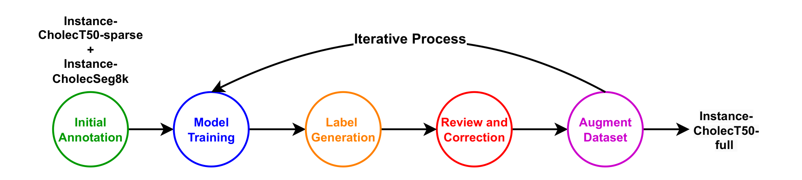
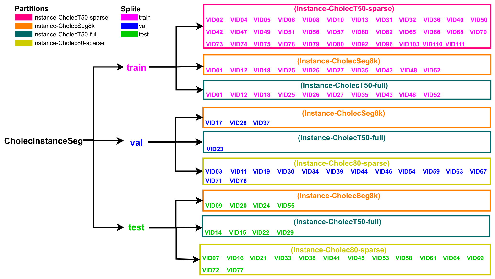
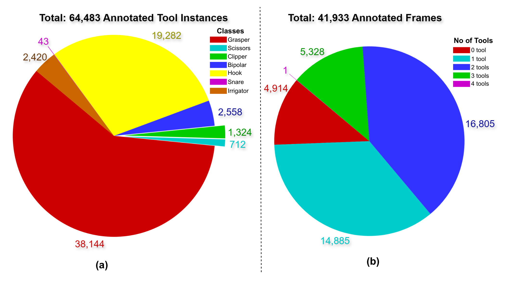

图文解读
1背景与动机
微创手术只能通过内镜看画面，辅助系统需要知道画面里有哪些器械、各在哪里。这要求实例分割：不仅分出器械像素，还要给同类的不同个体不同编号。
已有数据卡在四个地方：多来自猪手术；多任务数据集里器械部分很少；有的只有单类二值实例；大多没有实例编号。论文要补的缺口是人体常规手术、多类器械、带实例编号、规模足够训练。

表 1 里带实例信息的只有 ROBUST-MIS2019（两类）和本文。同期的 PhaKIR 因未完全公开没有纳入比较，所以"最大"是在表中范围内成立。
2核心观点速览
这是一份数据发布论文，贡献是标注本身和生产标注的流程。
- 数据： 四个分区共 41,933 帧、64,483 个实例，七类器械。
- 生产： 语义标签转实例、SAM 点提示人工标注、检测模型生成候选再人工修正。
- 评测： 按视频划分，指标为 COCO mAP 加按序列计算的 smAP。
- 结果： Mask2Former 为 61.47 mAP，Mask R-CNN 为 41.70；圈套器无结果，剪刀波动最大。
- 边界： 单一医院、单一术式；一致性子集规模和基线训练设置论文未说明。
385 个序列从哪里来
所有帧来自 CAMMA 团队的内部数据集 Cholec120 的三个公开子集。理解它们的重叠关系，是读懂后面划分的前提。

| 分区 | 序列 | 采样 | 帧数 | 实例数 |
|---|---|---|---|---|
| Instance-CholecSeg8k | 17 | 沿用全部帧 | 8,080 | 10,523 |
| Instance-CholecT50-sparse | 35 | 每 30 帧取 1 帧 | 2,681 | 4,098 |
| Instance-CholecT50-full | 15 | 全部 1 fps 帧 | 28,317 | 45,221 |
| Instance-Cholec80-sparse | 28 | 每 30 帧取 1 帧 | 2,855 | 4,641 |
全序列分区一个就占了约三分之二的帧和七成的实例。 这意味着规模主要来自 15 段视频的连续帧，独立场景数远少于帧数暗示的那样多。
4标什么、怎么标
七类器械为抓钳、双极钳、电钩、施夹器、剪刀、冲洗吸引器和圈套器；圈套器是作者在 Cholec80 六类之外新增的。夹子、缝针、缝线、标本袋、纱布不标；有器械伸出时，套管算作器械的一部分。
协议列出 12 种困难情形，如烟雾、反光、器械在液体中，并要求查看相邻帧、按预期形状推断。表 1 写 8 个语义类别，与七类器械差一类，论文未说明差的是什么。
三条生产路线：
- 语义转实例： 对 CholecSeg8k 按类做连通域分析；遮挡造成的碎片合并、同类重叠重标、标签噪声清理，共处理 892 个问题帧。
- 人工标注： 两个稀疏分区用改造过的 Segment Anything Annotator，以点提示为主，困难情形手工描边。
- 模型辅助： 全序列分区，见下一节。
5半自动标注流程

- 种子：CholecSeg8k 分区与 CholecT50 稀疏分区，补标新增类别。
- 用种子训练 RTMDet-Ins-l，对未标注帧生成候选。
- 人工修正：小错用 LabelMe 改，大错用 SAM 重标。
- 再训练：第一轮约 11k 张训练、生成约 10k、修正 5k；第二轮 21k 张训练、生成约 17k、修正 4k。
多数生成帧没有被修改，它们是逐帧审核过还是只抽查，论文未说明。 这直接决定全序列分区的质量下限。
6划分与指标

共享的 10 个视频全部放进训练集，验证和测试只用各分区独有的视频，所以评测反映的是对新手术的泛化。
smAP 先在每个序列内算某类平均精度，再对序列取平均，最后对类别取平均：
$$smAP=\frac{1}{C}\sum_{j=1}^{C}sAP_j$$
它让每段视频等权，抵消全序列分区的权重。某类在某段视频缺席时如何处理，论文未说明，这会左右稀有类的结果。
7结果说了什么
| 方法 | 抓钳 | 电钩 | 冲洗吸引器 | 施夹器 | 双极钳 | 剪刀 | mAP | smAP |
|---|---|---|---|---|---|---|---|---|
| Mask R-CNN | 37.25 | 61.84 | 43.04 | 58.73 | 28.42 | 20.91 | 41.70 | 50.18 |
| Mask2Former | 61.10 | 82.16 | 68.38 | 81.30 | 48.02 | 27.89 | 61.47 | 74.92 |
圈套器两项都是空值，汇总指标是其余六类的平均。Mask2Former 每类都更高，说明数据对模型有区分度。 但两者都是默认超参、单次训练，主干和分辨率论文未说明，不能当强基线。

正文说约 5,328 帧没有器械，图 5(b) 中这个数是 3 个器械的帧，无器械帧为 4,914。图中五项相加等于总帧数，所以应以图为准。
8结果没说什么
作者把电钩最好归因于频次高，但数字不支持。 抓钳实例约为电钩两倍，两个模型上都低 20 多个点；施夹器实例少，却高于抓钳。我的判断：末端形状是否固定更可能是原因，论文没有做混淆分析。
剪刀全局精度最低，序列精度却高，标准差达 33.20。作者解读为跨序列差异大；另一种解释是剪刀只出现在少数测试序列，平均的是少数几个数。每类覆盖几个测试序列，论文未说明，两种解释分不开。
质控给出的是"修了多少"，不是"还剩多少错"。 两项一致性分别为 91.2 和 95.7，子集大小都未说明。半自动与人工一致，也可能是修正者被候选锚定。
9质控做了什么
| 检查 | 结果 |
|---|---|
| 超过 3 个器械的帧全部复查 | 修正 26 帧 |
| 对照 Cholec80 器械存在标签找漏标 | 发现 267 个错误帧，作者称成功率约 48% |
| 器械间重叠超过 0.1 IoU 的帧复查 | 调整 247 帧 |
三项规则都针对特定错误；边界精度这类规则覆盖不到的误差没有量化，作者也承认允许边界有小瑕疵。
10复现要注意什么
- 原图要从 CAMMA 和 Kaggle 下载后用作者脚本对齐；测试集标注需申请。
- 共享的 10 个视频在训练集出现两次，训练时权重偏高。
- 三个序列为 1920×1080，具体是哪三个论文未说明，预处理需统一尺寸。
- 七类评测要单独说明圈套器的处理，并同时报告 mAP、smAP 和每类覆盖的序列数。